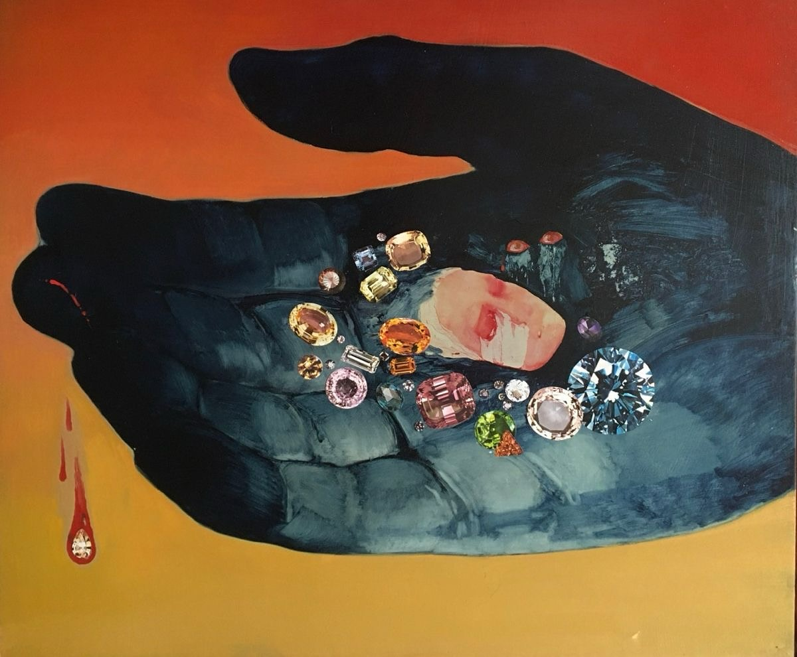
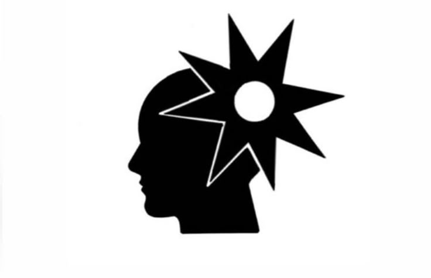
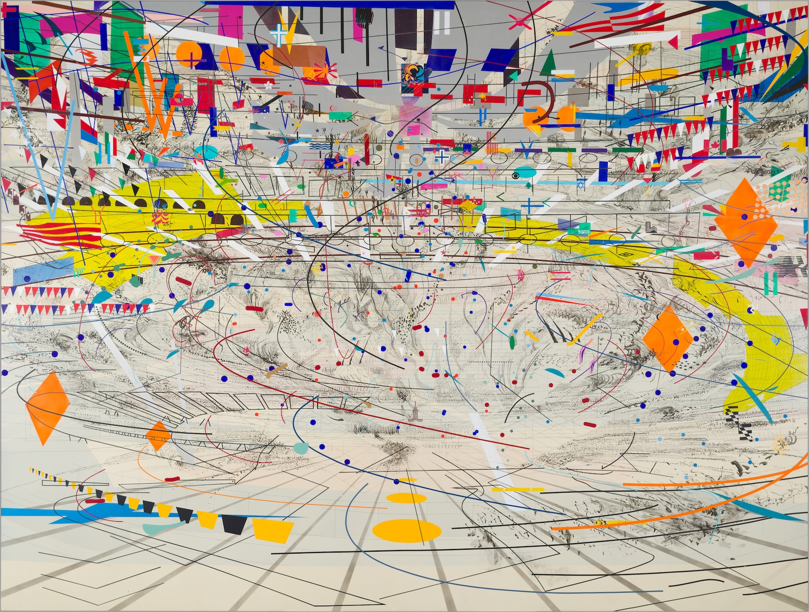
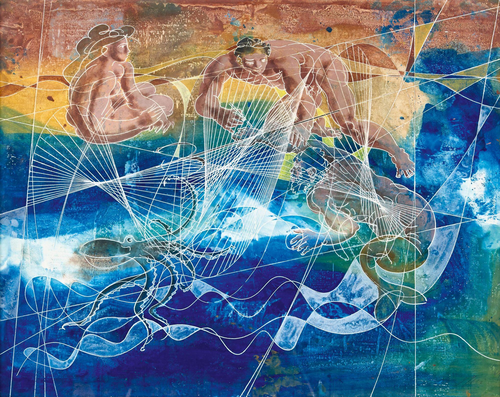
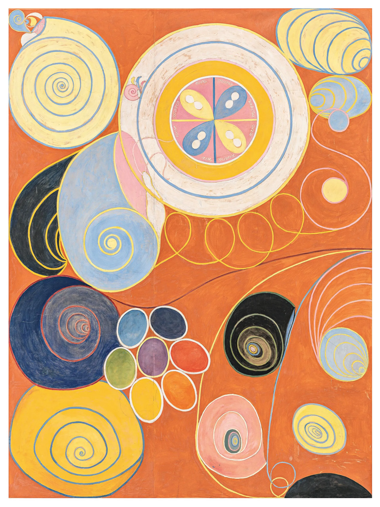

Klein's work lingers between memory and the subconscious, with soft-focus textures evoking half-remembered dreams. View series →

Where light and shadow share their secrets.

Klein's work lingers between memory and the subconscious, with soft-focus textures evoking half-remembered dreams. View series →

layers archival explosions—ghostly coliseums where history's voices collide. Her work excavates the underworlds of collective memory, from Addis Ababa to NYC. Explore 2019–2024 →

Swiss precision meets humanist fluidity. Erni's lines are both scientific and poetic. Study sketches →

Sweden's first abstract painter (1906-1915), revealed posthumously. Her colors channel the esoteric. Discover →